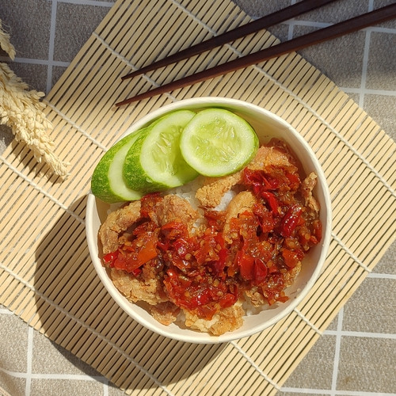

Rice bowl adalah hidangan yang menggabungkan nasi sebagai bahan utama dengan berbagai macam lauk dan topping, menjadikannya pilihan yang praktis dan mengenyangkan. Biasanya, rice bowl terdiri dari nasi putih atau nasi yang telah dibumbui, lalu disajikan dengan berbagai jenis lauk seperti ayam, daging sapi, ikan, atau telur, serta tambahan sayuran segar atau acar untuk memberi rasa segar dan kontras. Beberapa varian rice bowl juga menggunakan bahan pelengkap seperti saus teriyaki, sambal, atau kecap manis untuk menambah cita rasa. Rice bowl sangat populer di berbagai budaya, terutama di Jepang, Korea, dan Indonesia, karena kepraktisan dan keberagaman pilihan yang dapat disesuaikan dengan selera pribadi. Dengan tampilan yang menggugah selera dan rasa yang kaya, rice bowl menjadi pilihan yang cocok untuk makan siang atau malam yang cepat namun tetap memuaskan.